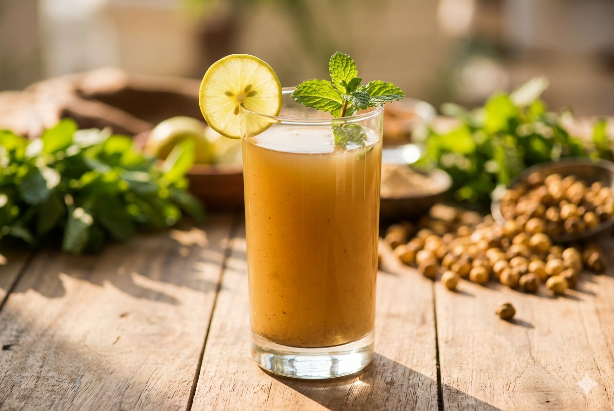
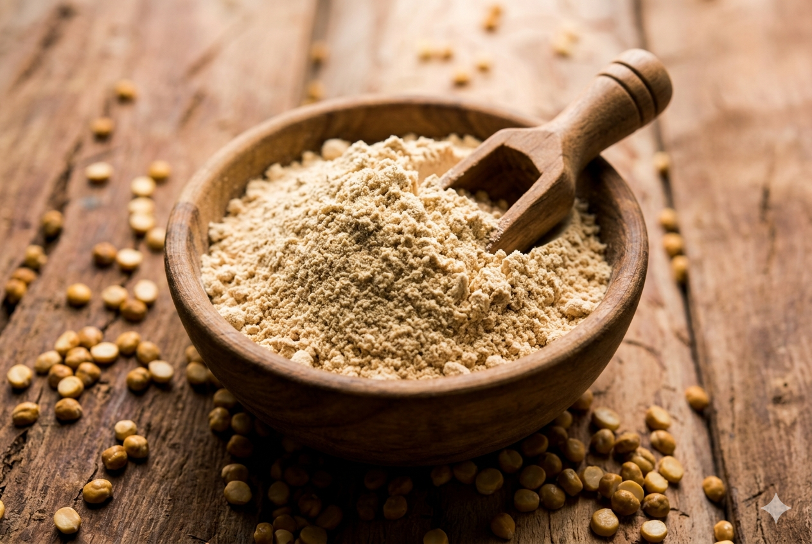
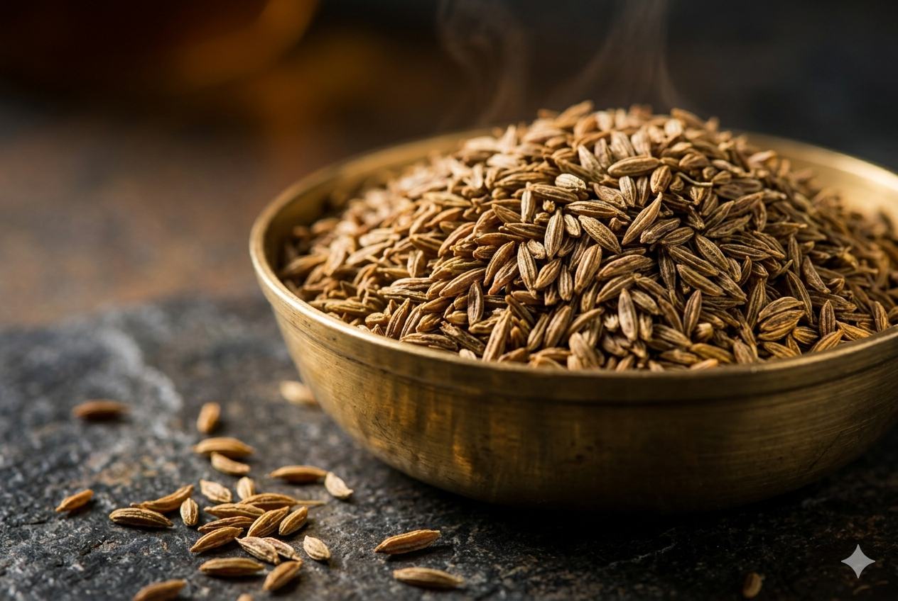
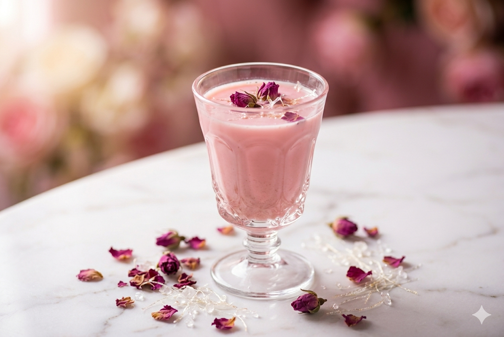
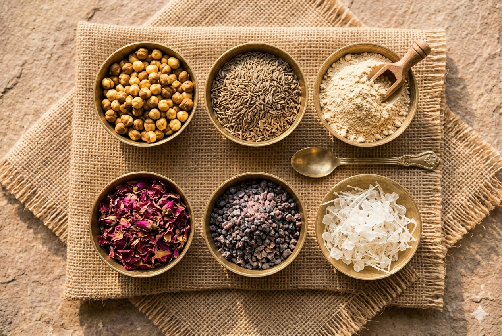

Rise above the sugar crash — drink what India ran on for 2,000 years.
RISE Sattu Sharbat is roasted gram flour — a 2,000-year-old Indian superfood — reimagined as a delicious, ready-to-mix protein drink packed with 22g plant protein. Zero refined sugar, zero chemicals, all nutrition. While the world reaches for sugary packaged drinks, you rise above them. Available in 3 flavors — Plain Salted, Roasted Jeera, and Rose.

A single bottle of your favourite packaged drink has 30g+ sugar — that's 7 teaspoons. Your "fruit drink" is basically liquid sugar with zero nutrition.
Carbonated drinks, packaged juices, energy drinks — they give you a sugar spike and crash. Zero protein, zero fiber, zero real nutrition. Just empty calories.
India has 101 million diabetics and rising. Sugary beverages are a leading cause. Every sip of that cold drink is a step in the wrong direction.
Artificial colors, preservatives, phosphoric acid, synthetic flavors — read the back label on your favorite "refreshing" drink. Scary, right?

The OG. Pure. Powerful.
Classic sattu sharbat the way it's been enjoyed for millennia. One 40g sachet makes a full glass — tear, pour into cold water, shake, and rise. ~9g protein per serving, zero artificial anything.

Your dadi's recipe, upgraded.
Roasted cumin meets roasted gram — a heritage flavor rooted in Ayurvedic tradition. Jeera naturally aids digestion and adds a warm, earthy depth. One sachet = one perfect glass of protein sharbat.

Elegance in every sip.
Delicate rose petals blended with roasted gram flour, sweetened naturally with threaded mishri (dhaga mishri) — no refined sugar, just pure tradition. A soothing, aromatic protein sharbat that calms the senses. Perfect for evenings or as a refreshing summer cooler.

Backed by ICMR-NIN. Certified by FSSAI.
Each 40g sachet: ~9g Protein, ~25g Carbs, ~2.8g Fiber, ~2.2g Fat. Rich in Calcium, Potassium, Phosphorus. FSSAI certified organic. No artificial sweeteners, colors, or preservatives.
Pick your sattu personality — Plain Salted for the purist, Roasted Jeera for the desi soul, or Rose for the romantic. There's a sattu for every mood.
Tear open one sachet, pour into 200ml cold water. Shake it up. No measuring, no blender, no mess. Works with milk, curd, or just plain water.
22g protein absorbed. Zero refined sugar. Your body says thank you, your energy stays locked in all day. No crash, no junk — just pure rise. Ancient grain. Relentless rise.
I used to grab a packaged drink every afternoon — just a habit, you know? Then a friend handed me an Arogya Sattu sachet. Mixed it in cold water, one sip, and I was hooked. The Roasted Jeera flavor is exactly like what mummy used to make at home. Now instead of a sugar crash at 4pm, I actually feel energized. My colleagues keep asking what I'm drinking. Main toh pehle se bol raha tha — sattu is the real deal. It's a drink that gives back, not one that takes away.
A typical packaged beverage gives you 30g+ refined sugar, zero protein, and zero fiber. RISE Sattu gives you 22g protein per 100g, 7g fiber, zero refined sugar, and zero artificial anything. It's a 2,000-year-old superfood drink that makes you rise — not crash.
Zero refined sugar and zero artificial sweeteners. Our Rose variant is sweetened with threaded mishri (dhaga mishri) — a traditional, unrefined natural sweetener. The Plain and Jeera variants get their subtle taste from the roasted gram itself. Compare that to most packaged beverages that pack 20-35g refined sugar per serving. RISE is 100% vegan, dairy-free, and made entirely from natural ingredients — just pure plant nutrition.
Definitely not! Our Plain Salted Sharbat has a nutty, earthy, refreshing taste — the classic Bihar sattu experience. The Roasted Jeera adds warm, aromatic depth that aids digestion. And Rose? A delicate, fragrant twist that makes your protein feel like a treat. We've spent months perfecting each flavor so you'll actually look forward to your protein.
Yes. RISE Sattu is FSSAI certified organic. Every batch is lab-tested for protein content, heavy metals, and microbial contamination. We follow the highest food safety standards. Our nutrition claims are verified against ICMR-NIN dietary guidelines.
Each sachet is 40g — exactly one glass of sattu sharbat. Try a single sachet for ₹35, or get the 10-pack for ₹299 (just ₹29.9/glass). The 10-pack Assorted at ₹329 lets you try all 3 flavors. That's cheaper than most packaged drinks — and infinitely healthier. Your wallet and your body both win.
100%! Sattu is incredibly versatile. Use it in litti chokha, parathas, ladoos, smoothie bowls, pancake batter, or energy balls. Our Plain Salted variant is perfect for cooking too. Follow us on Instagram @risethesattu for weekly recipes that turn this ancient grain into everyday fuel.
Join thousands of Indians who've ditched sugar-loaded drinks for something that actually makes them rise. RISE Sattu — rich in protein, fiber, and 2,000 years of wisdom. Try it risk-free — if you don't love it, we'll refund you. No questions asked.
Free delivery on orders above ₹499 · Try a single sachet for just ₹35 · Use code DESIDUM for 20% off